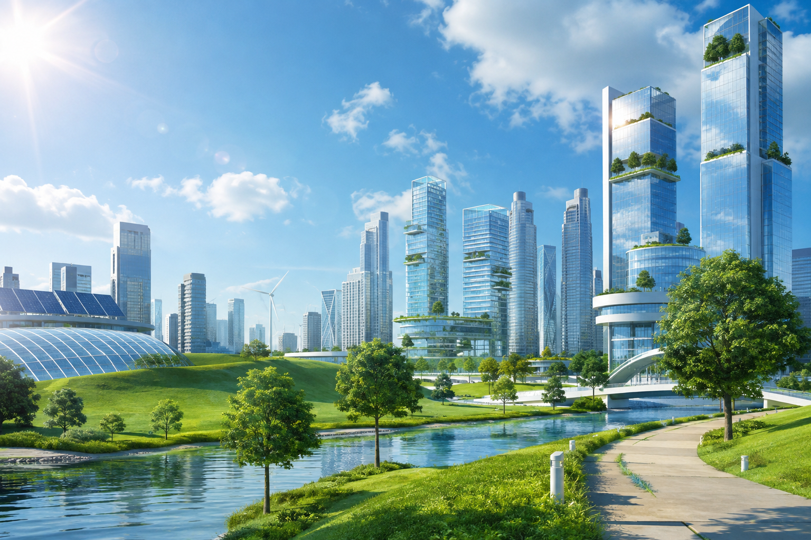

Global Urbanization.
The SDG 11 Challenge.

Rapid urbanization and population scaling present critical challenges in establishing sustainable metropolises. Systemic vulnerabilities include inadequate infrastructure, inefficient resource management, pollution saturation, and social inequality.
To achieve United Nations SDG 11—ensuring cities are inclusive, safe, resilient, and sustainable—radical engineering and ecological frameworks must be deployed. The objective is transitioning urban centers into high-efficiency environments capable of supporting a Type 1 civilization.
[ INNOVATIVE_SOLUTIONS ]
Strategic engineering frameworks for sustainable urban resilience.

Vertical Forest Ecosystems
Urban density eradicates green space, triggering heat island intensity and poor air quality.
Integrate high-density arboriculture into structural architecture. Vertical forests capture carbon, regulate thermal loads, and restore localized biodiversity.
Smart Waste Management
Analog waste logistics drive emissions and cripple material recycling yields.
Deploy IoT fill-sensors and AI-driven sorting matrices. Real-time telemetry optimizes municipal collection paths, minimizing diesel emissions and maximizing material recovery.

Energy-Generating Infrastructure
Reliance on external fossil fuel grids leaves cities susceptible to brownouts and massive carbon footprints.
Convert passive surfaces into energy harvesters. Embed photovoltaic road segments, vertical-axis micro turbines, and decentralized geothermal loops directly into the civic footprint.

Water-Sensitive Urban Design
Impermeable concrete triggers lethal flash floods and blocks subterranean aquifer recharge.
Engineer sponge-city dynamics. Implement bioretention cells, permeable roadway layers, and closed-loop greywater recycling to stabilize local hydrological cycles.

Sustainable Transit Networks
Combustion-engine dependency causes chronic gridlock and high particulate matter saturation.
Deploy autonomous electric MaaS (Mobility-as-a-Service) fleets and grade-separated active transit spines. Apply dynamic congestion algorithms to optimize flow.

Urban Agriculture Matrix
Dense populations rely on fragile, high-emission global logistics chains for basic food security.
Activate localized hydroponic rooftops and subterranean vertical farms. Utilize municipal organic waste recovery to fuel closed-loop urban nutritional cultivation.
Generative AI Framework
The SDG 11 urban resilience initiatives and strategic solutions presented in this module were synthesized utilizing IBM's Granite foundation models via the WatsonX prompt lab. Engineered for high-fidelity instruction following and enterprise-scale analytics.
1M1B | AI for Sustainability Virtual Internship
Verified achievement demonstrating advanced proficiency in deploying, scaling, and managing enterprise-grade Agentic AI of IBM ecosystems.
Agentic AI Credential